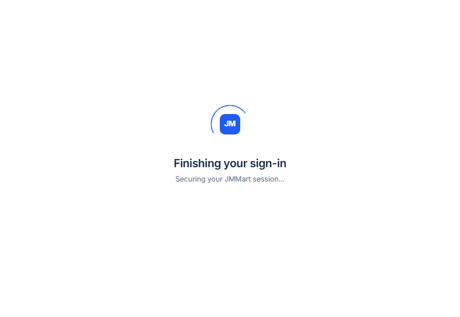

Chosen
F · Logo ring, all three states
Full-bleed white, the blue JMMart mark with one thin arc, the heading, the live step. After six seconds a quiet way out appears; a failed hand-off swaps in place for the error with Try again and Return to sign in — no card at any point.
Open mockup F →